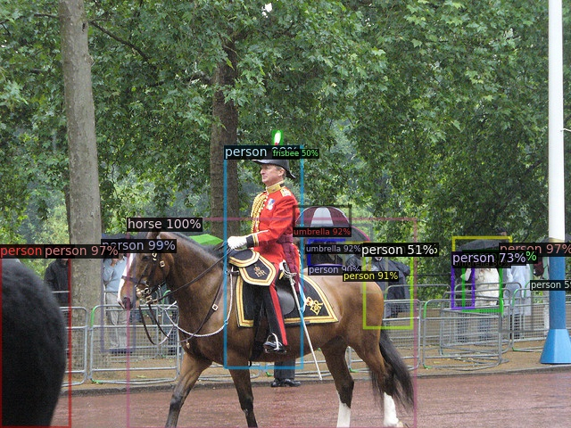
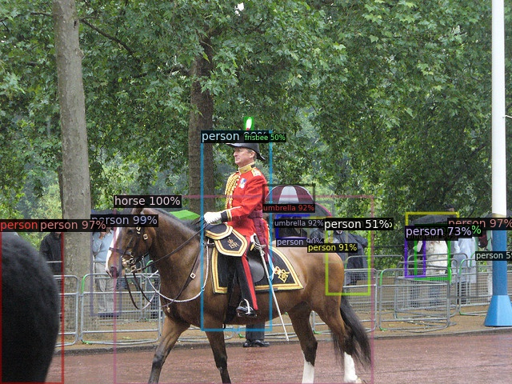

Sticker Hunt with Computer vision
Semester project report
By Tugdual Kerjan
Supervised by Krzysztof Lis and Dr. Mathieu Salzmann
Acknowledgements
A little history
Hunt the stickers and get a prize!

Requirements
- Sticker detection
- App development
- Sticker classification
Sticker detection
sudo apt install conda
conda create -n myenv
conda activate myenv
pip3 install torch torchvision detectron2 opencv-python
python3 demo.py
 

ssh kerjan@izar.epfl.ch
Sinteract -t 01:00:00 -c 10 -m 20G -p gpu
module load gcc/8.4.0-cuda cuda/10.2.89
module load python/3.7.7
source detect/bin/activate
pip3 install -r requirements.txt
Finding something to train the model with
ü§î
üç∫
Training the model
import torch
import detectron2
import pycocotools
from detectron2.utils.logger import setup_logger
setup_logger()
# import some common libraries
import numpy as np
import os, json, cv2, random
# import some common detectron2 utilities
from detectron2 import model_zoo
from detectron2.engine import DefaultPredictor
from detectron2.config import get_cfg
from detectron2.utils.visualizer import Visualizer
from detectron2.data import MetadataCatalog, DatasetCatalog
from detectron2.structures import BoxMode
from detectron2.engine import DefaultTrainer
from detectron2.utils.visualizer import ColorMode
path = "Flick/FlickrLogos-v2/"
classes = ["adidas","aldi","apple","becks","bmw","carlsberg","chimay","cocacola","corona","dhl","erdinger","esso","fedex","ferrari","ford","fosters","google","guiness","heineken","hp","milka","nvidia","paulaner","pepsi","rittersport","shell","singha","starbucks","stellaartois","texaco","tsingtao","ups"]
# Mention there is a bitmask and not polygon
def get_logos(directory):
dataset_dicts = []
for line in open(directory, "r"):
imgclass, imgname = line.split(",")
imgname = imgname[:-1] #remove extra \n
imgclass = imgclass.lower() #Lower case HP
record = {}
filepath = os.path.join(path,"classes/jpg/",imgclass,imgname)
height, width = cv2.imread(filepath).shape[:2]
record["file_name"] = filepath
record["image_id"] = imgname[:-4] #Remove the .jpg
record["height"] = height
record["width"] = width
if(imgclass == "no-logo"):
record["annotations"] = []
else:
filepathmask = os.path.join(path,"classes/masks/",imgclass,imgname)
bbox = open(filepathmask+".bboxes.txt", "r").readlines()[1].split(" ")
b_a = np.asarray(cv2.imread(filepathmask+".mask.0.png")[:, :, 0] == 255, dtype=bool, order='F') # Already in grayscale, change to binary
# Only one object per image for this one
record["annotations"] = [{
"bbox": [int(x) for x in bbox],
"bbox_mode": BoxMode.XYWH_ABS,
"segmentation": pycocotools.mask.encode(b_a), #cfg.INPUT.MASK_FORMAT must be set to bitmask if using the default data loader with such format.
"category_id": classes.index(imgclass),
}]
dataset_dicts.append(record)
return dataset_dicts # Returns a dict of all images with their respective descriptions
for d in ["train", "test"]:
DatasetCatalog.register("logo_" + d, lambda d=d: get_logos(path + d + "set.txt"))
MetadataCatalog.get("logo_" + d).set(thing_classes=classes)
logo_metadata = MetadataCatalog.get("logo_train")
dataset_dicts = DatasetCatalog.get("logo_train")
model = "COCO-InstanceSegmentation/mask_rcnn_R_50_FPN_3x.yaml"
cfg = get_cfg()
cfg.merge_from_file(model_zoo.get_config_file(model))
cfg.INPUT.MASK_FORMAT = 'bitmask'
cfg.DATASETS.TRAIN = ("logo_train",) # Train with the logos dataset
cfg.DATASETS.TEST = () # Train with the logos dataset
cfg.MODEL.DEVICE = "cpu"
cfg.DATALOADER.NUM_WORKERS = 2
cfg.MODEL.WEIGHTS = model_zoo.get_checkpoint_url(model) # Let training initialize from model zoo
cfg.SOLVER.IMS_PER_BATCH = 1
cfg.SOLVER.BASE_LR = 0.000025 # pick a good LR
cfg.SOLVER.MAX_ITER = 4000
cfg.MODEL.ROI_HEADS.NUM_CLASSES = len(classes) # only has one class (ballon). (see https://detectron2.readthedocs.io/tutorials/datasets.html#update-the-config-for-new-datasets)
os.makedirs(cfg.OUTPUT_DIR, exist_ok=True)
trainer = DefaultTrainer(cfg)
trainer.resume_or_load(resume=False)
trainer.train()
Results
A simple change
import torch
import detectron2
import pycocotools
from detectron2.utils.logger import setup_logger
setup_logger()
# import some common libraries
import numpy as np
import os, json, cv2, random
# import some common detectron2 utilities
from detectron2 import model_zoo
from detectron2.engine import DefaultPredictor
from detectron2.config import get_cfg
from detectron2.utils.visualizer import Visualizer
from detectron2.data import MetadataCatalog, DatasetCatalog
from detectron2.structures import BoxMode
from detectron2.engine import DefaultTrainer
from detectron2.utils.visualizer import ColorMode
path = "Flick/FlickrLogos-v2/"
classes = ["adidas","aldi","apple","becks","bmw","carlsberg","chimay","cocacola","corona","dhl","erdinger","esso","fedex","ferrari","ford","fosters","google","guiness","heineken","hp","milka","nvidia","paulaner","pepsi","rittersport","shell","singha","starbucks","stellaartois","texaco","tsingtao","ups"]
# Mention there is a bitmask and not polygon
def get_logos(directory):
dataset_dicts = []
for line in open(directory, "r"):
imgclass, imgname = line.split(",")
imgname = imgname[:-1] #remove extra \n
imgclass = imgclass.lower() #Lower case HP
record = {}
filepath = os.path.join(path,"classes/jpg/",imgclass,imgname)
height, width = cv2.imread(filepath).shape[:2]
record["file_name"] = filepath
record["image_id"] = imgname[:-4] #Remove the .jpg
record["height"] = height
record["width"] = width
if(imgclass == "no-logo"):
record["annotations"] = []
else:
filepathmask = os.path.join(path,"classes/masks/",imgclass,imgname)
bbox = open(filepathmask+".bboxes.txt", "r").readlines()[1].split(" ")
b_a = np.asarray(cv2.imread(filepathmask+".mask.0.png")[:, :, 0] == 255, dtype=bool, order='F') # Already in grayscale, change to binary
# Only one object per image for this one
record["annotations"] = [{
"bbox": [int(x) for x in bbox],
"bbox_mode": BoxMode.XYWH_ABS,
"segmentation": pycocotools.mask.encode(b_a), #cfg.INPUT.MASK_FORMAT must be set to bitmask if using the default data loader with such format.
"category_id": classes.index(imgclass),
}]
dataset_dicts.append(record)
return dataset_dicts # Returns a dict of all images with their respective descriptions
for d in ["train", "test"]:
DatasetCatalog.register("logo_" + d, lambda d=d: get_logos(path + d + "set.txt"))
MetadataCatalog.get("logo_" + d).set(thing_classes=classes)
logo_metadata = MetadataCatalog.get("logo_train")
dataset_dicts = DatasetCatalog.get("logo_train")
model = "COCO-InstanceSegmentation/mask_rcnn_R_50_FPN_3x.yaml"
cfg = get_cfg()
cfg.merge_from_file(model_zoo.get_config_file(model))
cfg.INPUT.MASK_FORMAT = 'bitmask'
cfg.DATASETS.TRAIN = ("logo_train",) # Train with the logos dataset
cfg.DATASETS.TEST = () # Train with the logos dataset
cfg.MODEL.DEVICE = "cpu"
cfg.DATALOADER.NUM_WORKERS = 2
cfg.MODEL.WEIGHTS = model_zoo.get_checkpoint_url(model) # Let training initialize from model zoo
cfg.SOLVER.IMS_PER_BATCH = 1
cfg.SOLVER.BASE_LR = 0.000025 # pick a good LR
cfg.SOLVER.MAX_ITER = 4000
cfg.MODEL.ROI_HEADS.NUM_CLASSES = len(classes) # only has one class (ballon). (see https://detectron2.readthedocs.io/tutorials/datasets.html#update-the-config-for-new-datasets)
os.makedirs(cfg.OUTPUT_DIR, exist_ok=True)
trainer = DefaultTrainer(cfg)
trainer.resume_or_load(resume=False)
trainer.train()
Better results
App development
iPhone / Android
Web
Telegram
pip3 install python-telegram-bot numpy
import cv2
from logodetect import predict
import telegram
from telegram import InlineKeyboardButton, InlineKeyboardMarkup
from telegram.ext import CommandHandler, MessageHandler, Updater, Filters, CallbackQueryHandler
from telegram.error import NetworkError, Unauthorized
import numpy as np
from io import BytesIO
updater = Updater(token='1783792051:AAGgPYOeZkvdKpPCOwE50XwWqtruCymvfGc', use_context=True)
def main():
dispatcher = updater.dispatcher
dispatcher.add_handler(CommandHandler('start', start))
dispatcher.add_handler(MessageHandler(Filters.photo, receive_images))
updater.start_polling()
def receive_images(update, context):
user_id = int(update.message.from_user['id'])
username = update.message.from_user['username']
decode_img = cv2.imdecode(np.frombuffer(BytesIO(context.bot.getFile(update.message.photo[-1].file_id).download_as_bytearray()).getbuffer(), np.uint8), -1)
context.bot.sendMessage(update.effective_chat.id, "Preparing glasses and brains...")
image = predict(decode_img)
buffer = cv2.imencode(".png", image)[1].tobytes()
context.bot.sendPhoto(update.effective_chat.id, buffer)
def start(update, context):
context.bot.send_message(chat_id=update.effective_chat.id,
text="""Hey! Send me a message with a picture and I'll cut it out for you!""")
if __name__ == '__main__':
main()
Sticker Classification
Few Shot
- n images
- k classes
- q query
Datasets
| Omniglot | miniImageNet |
|---|---|
| 32000 Images | 60000 Images |
ü߆
Great help
Training the model
Time to modify
üë∑
torch.device="cuda"
x.double().cuda()
torch.device="cpu"
x.double()
query_images = k_images
for image in query_images:
load(image)
query_images = 1
load("custom_image.png")
Testing time üëè üëè üëè
import numpy as np
from PIL import Image
import torch
import argparse
import os
from torchvision import transforms
import pprint as pp
import matplotlib.pyplot as plt
import pandas as pd
from torch.optim import Adam
from torch.utils.data import DataLoader
import cv2
from config import PATH
from few_shot.callbacks import *
from few_shot.core import EvaluateFewShot, NShotTaskSampler, prepare_nshot_task
from few_shot.datasets import MiniImageNet, OmniglotDataset
from few_shot.metrics import categorical_accuracy
from few_shot.models import get_few_shot_encoder
from few_shot.proto import proto_net_episode
from few_shot.train import fit
from few_shot.utils import setup_dirs
setup_dirs()
device = torch.device('cpu')
###########
# Dataset #
###########
images = []
for root, folders, files in os.walk('data_custom/logos/'):
if len(files) == 0:
continue
class_name = root.split('/')[-1]
for f in files:
images.append({
'class_name': class_name,
'filepath': os.path.join(root, f)
})
df = pd.DataFrame(images)
df = df.assign(id=df.index.values)
unique_characters = sorted(df['class_name'].unique())
class_name_to_id = {
unique_characters[i]: i for i in range(len(df['class_name'].unique()))}
df = df.assign(class_id=df['class_name'].apply(
lambda c: class_name_to_id[c]))
#########
# Model #
#########
# HAVE TO CHANGE TO LOAD FROM MODELS
model = get_few_shot_encoder(3)
model.load_state_dict(torch.load("models/proto_nets/logos_nt=1_kt=4_qt=2_nv=1_kv=1_qv=1.pth", map_location=torch.device('cpu')))
model.eval()
model.to(device, dtype=torch.double)
############
# Prepare #
############
n_train = 1
# All the classes
k_train = len(df['class_name'].unique())
q_train = 0
optimiser = Adam(model.parameters(), lr=1e-3)
loss_fn = torch.nn.NLLLoss().cuda()
def getimage(filepath: str):
instance = Image.open(filepath)
instance = transforms.Compose([
transforms.CenterCrop(200),
transforms.Resize(84),
transforms.ToTensor(),
# transforms.Normalize(mean=[0.485, 0.456, 0.406],
# std=[0.229, 0.224, 0.225])
])(instance)
return instance
for i in range(0, 10):
batch_images = []
batch_id = []
# Get support images
support_k = {k: None for k in range(0, k_train)}
for k in range(0, k_train):
# Select support examples
support = df[df['class_id'] == k].sample(1)
for i, s in support.iterrows():
batch_images.append(getimage(s['filepath']))
batch_id.append(s['class_id'])
batch = [torch.stack(batch_images), torch.tensor(batch_id)]
# Add query image
image_to_add = getimage("requestLogo.jpg")
image_to_add = torch.unsqueeze(image_to_add, 0)
batch[0] = torch.cat((batch[0], image_to_add), 0)
batch[1] = torch.cat((batch[1], torch.tensor([2])), 0)
# Prepare to launch model
x, y = prepare_nshot_task(n_train, k_train, q_train+1)(batch)
loss, y_pred = proto_net_episode(
model,
optimiser,
loss_fn,
x,
y,
n_train,
k_train,
q_train+1,
distance='l2',
train=False,
)
model(x)
fig, axs = plt.subplots(k_train, 2)
# Change size
fig.set_size_inches(18.5, 10.5, forward=True)
# Adjust with the correlation
for image in range(0, k_train):
print(y_pred[0][image].item())
# x[image] = x[image].mul(y_pred[0][image].item())
# Set images with the left being the support and right the query
for image in range(0, k_train+1):
a = np.array(x[image])
# a = a.astype(np.uint16) * 255
# a = a[[1,2,0]]
a = a.transpose((1, 2, 0))
axs[image % k_train][int(image/k_train)].imshow(a)
# Remove axis`
for axis in axs:
for a in axis:
a.axis('off')
plt.show()
Time to modify x2
üë∑
Custom dataset time üëè üëè üëè
Smash it all together! üî®
Detector + Telegram + Prototypical
Conclusion
We have an application on which anyone can send sticker!
It will recognize, mask, and classify the sticker!
What I learned
git, python, numpy arrays, pytorch tensors, Pillow images, pandas dataframes, git, ssh, scp, rsync, ImageMagick, aptitude, Heroku, Docker, Markdown, bash, Slurm, OpenCV, VirtualEnv, Conda, Jupyter Notebooks, VSCode.
Things I would like to improve on
- Feedback
- Accuracy, Precision
- Streamlining
- Zero shot